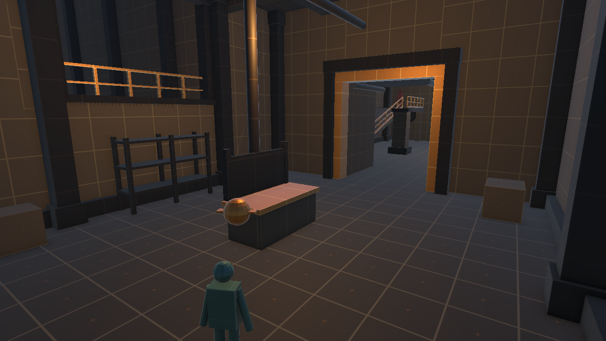
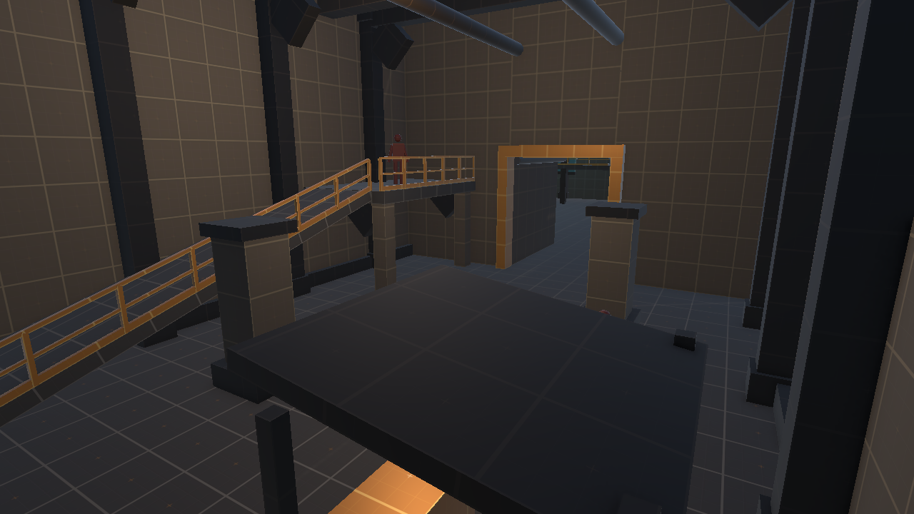
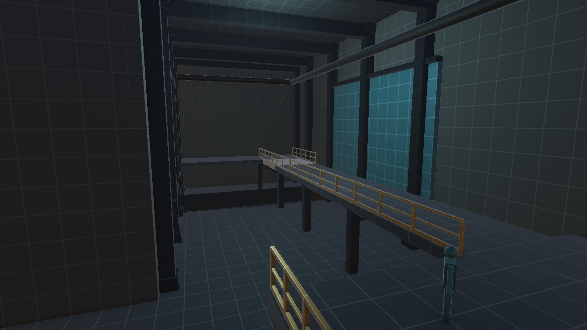
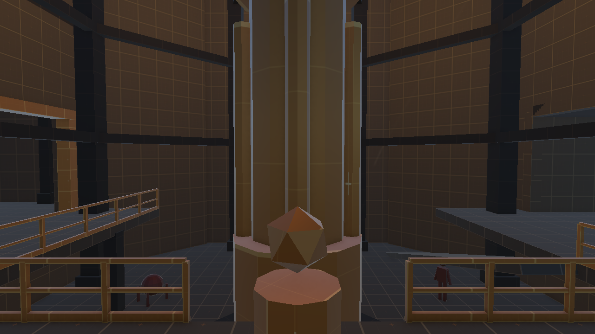
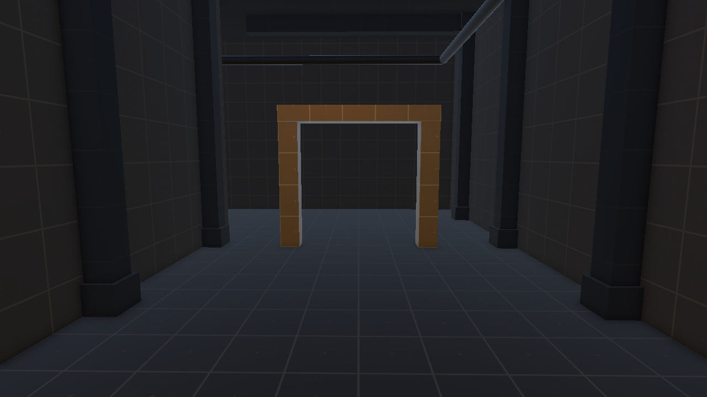
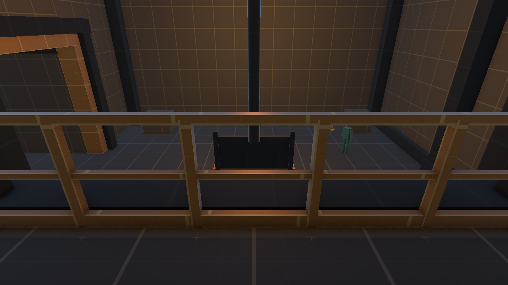
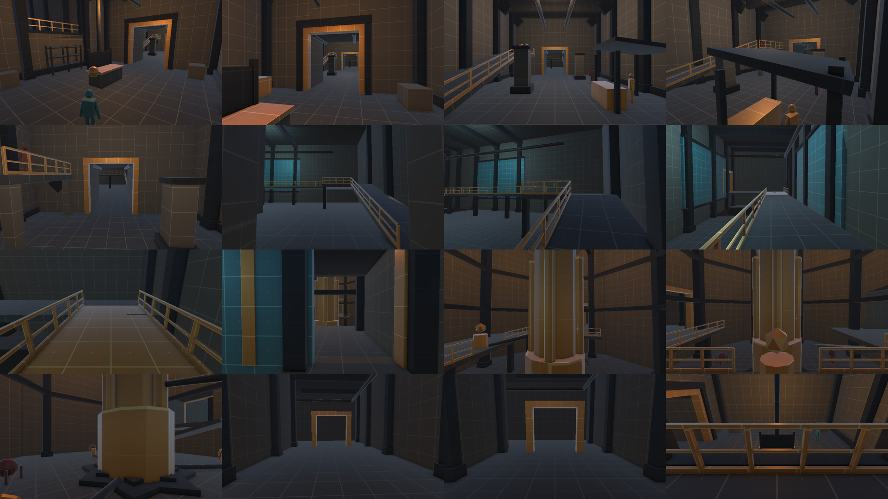

validate_scene.py --strict
PASS (exit 0)
Luzes Reais URP
5 / 5
Tris Estimados
70.500 / 150.000
Draw Calls
20 / 120
Static Batching
90.8% (≥50%)
Textura VRAM
0.75 / 128 MB (0 novas)
Baseline PlayMode M1–M2
2 / 2 PASSED
▶ Walkthrough Completo C3 (Z1 → Z2 → Z3 → Z4 → Z5 → Mirante sobre Z1)
AGUARDANDO APROVAÇÃO DO BRUNO
Restrição respeitada: SEM arte final e SEM textura final — refinamento puro de arquitetura, proporções, leitura de espaço (pórticos, guarda-corpos vazados, dutos-guia, nervuras da cúpula, dutos das 3 válvulas ligados à Sirene-Mestra) e composição de visadas.
Z1 — Oficina da Sucata
C3 CONSOLIDADO
Pilastras escalonadas, estante em 3 níveis, painel traseiro na Bancada I1 com duto-guia subindo ao teto, arquivolta dupla emoldurando a visada para a rampa e mezanino da Z2, e janelão do Mirante Z5 no alto da parede Norte.
Z2 — Passarela da Bigorna
C3 CONSOLIDADO
4 pórticos industriais ritmando a nave, guarda-corpos vazados na rampa 16.9° e no Mezanino +3.5m (E2 legível), toldo estrutural enquadrando a banca do Tio Horário, bases chanfradas nos pilares de cobertura e dutos aéreos apontando para o Arco Z3.
Z3 — Pátio das Sirenes + Galeria de Fumaça
C3 CONSOLIDADO
Pórticos monumentais de 14 m, pilares sob a passarela lateral de 4 m, guarda-corpos vazados em toda a travessia e na ponte sobre o fosso de vapor (3 dutos no fundo do fosso), paredões de 8 m emoldurados e Arco elevado Z3→Z4.
Z4 — Câmara Octogonal do Caldeiral Central
C3 CONSOLIDADO
8 colunas monumentais de 18 m + nervuras de cúpula convergindo sobre a Sirene-Mestra, frisos horizontais marcando +7 m e +12 m, plinto octogonal de 2 degraus + 3 dutos radiais ligando I2/I3/I4 à torre central, guarda-corpos vazados ao redor do Nó I5 e Arco Oeste Z4→Z5.
Z5 — Galeria de Retorno Sync
C3 CONSOLIDADO
4 pórticos estruturais emoldurando em perspectiva a Catraca de Saída Sync I6 e dutos superiores guiando até o corredor do Mirante.
Z5 → Z1 — Visada do Mirante Fechando o Loop
NOVA VISADA C3
Do alto do Mirante (+3.5 m) pelo guarda-corpo vazado, o jogador vê diretamente a Oficina da Sucata Z1 (Bancada I1, Dez + Porca e Arco Z1→Z2) lá embaixo, fechando o loop arquitetônico com 0% void.
Folha de Contato 4×4 do Walkthrough C3
RESUMO VISUAL
📋 Fila de Decisões do Diretor (Para o Bruno decidir quando quiser)
PENDENTE- [Infra / Sem urgência] Renomear
3dprinter-setup-ia→3dcreator-setup-ia(registrado conforme pedido; não executado). - [Level Design / Atalho Z5→Z1] O Mirante da Z5 agora abre visada direta sobre Z1. Manter apenas como mirante panorâmico de encerramento do Vertical Slice, ou prever no futuro um atalho físico (escada/elevador) descendo de Z5 para Z1?
- [Level Design / Nível +7.0 m em Z4] Como a mecânica de Rebote está congelada, o nível
+7.0 mem Z4 está marcado apenas como friso arquitetônico superior. Manter assim até o Rebote entrar ou adicionar uma segunda rampa+3.5 m → +7.0 m? - [Level Design / Passarela Z3] Quando o Wall-Run C# for implementado no futuro, a passarela lateral de 4 m em Z3 fica como rota segura/acessibilidade permanente ou será removida para obrigar o wall-run?